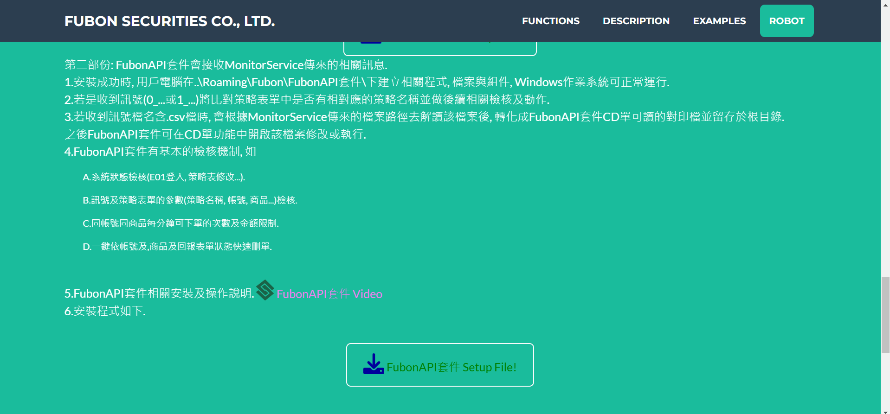
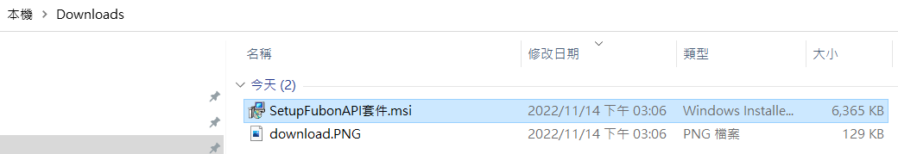
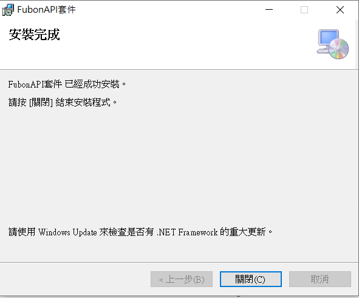
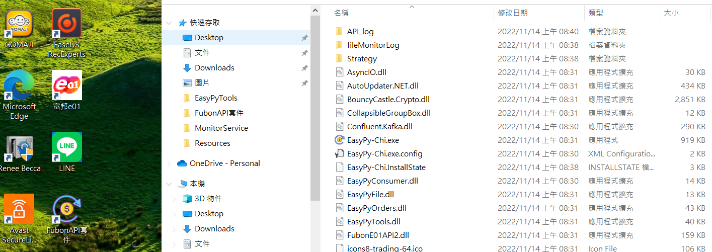

1.SetupFubonAPI套件一鍵安裝檔, 建立根目錄於Users\[UserName]\AppData\Roaming\Fubon\FubonAPI套件\, 且於桌面及開始工具列建立捷徑.
下載
點擊
其它資訊

仍要執行, 因需管理者權限, 故會跳至管理者安裝畫面按下"是"

關閉

2.安裝後即可執行, 第一次運行時應用程式將建立Users\[UserName]\Fubon\FubonAPI套件\Strategy\策略表單存檔目錄, FubonAPI套件更新修正策略表單使用根目錄下Strategy\Strategy.html, FubonAPI套件是啟動及Strategy異動後讀取資料於記憶體中運行, 在更新表單及應用程式關閉時會釋放其記憶體以確保策略不會被觸發.
3.程式運行時若收到MonitorService送來的資料, 將檢核訊號與Strategy表單的參數, 於符合時才進行委託.
- 首先, 檢核"執行", "策略名稱", "標的代碼".
- 之後, 檢核部位來判斷買賣, 這裡特別要提FubonAPI套件支援加碼功能, 計算公式如下. 當side>0時買進; 當side<0時賣出.
- 再來, 檢核帳號是否符合E01可執行之帳號.
- 最後, 檢核一分鐘內的下單次數與金額(同帳號, 商品及買賣方向), 目前預設一分鐘內的限制為5次及1百萬.
newPosition = signalPosition - tablePosition
side = newPosition + signalPosition
tablePosition = tablePosition + newPosition
根目錄
服務

3.此服務在主機啟動時即運行, 監控檔案路徑的時間為每日早上06:00開始, 05:00結束. 即主機在沒有關閉且服務運行的情況下, 這段時間內都會監控其相關路徑.
訊號範例如下: